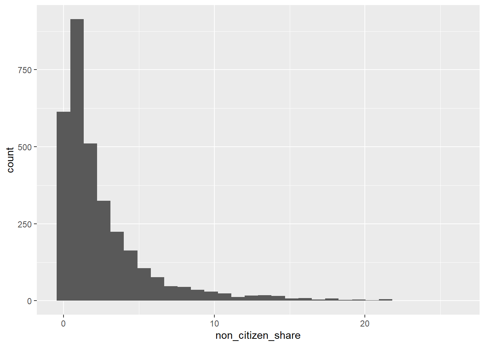
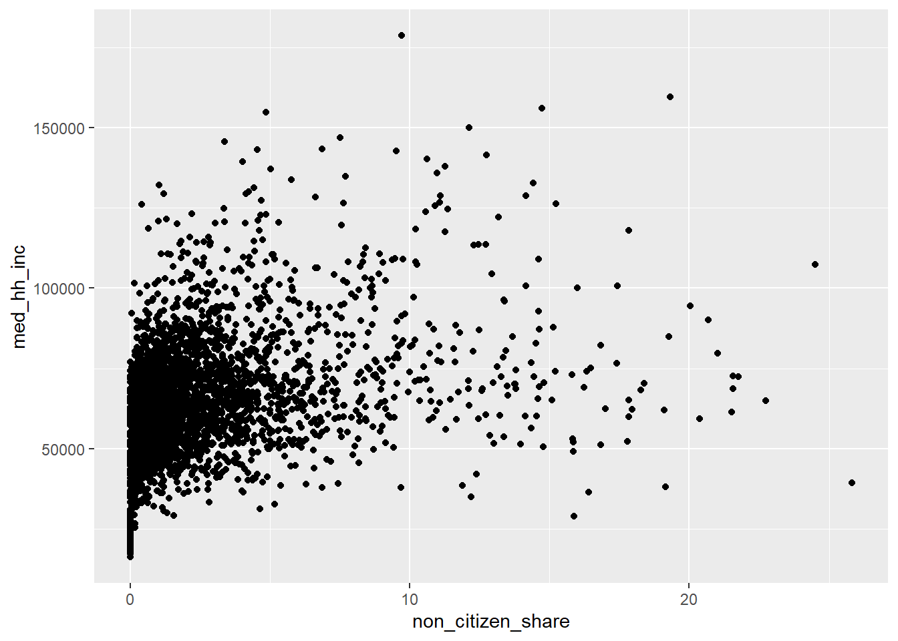
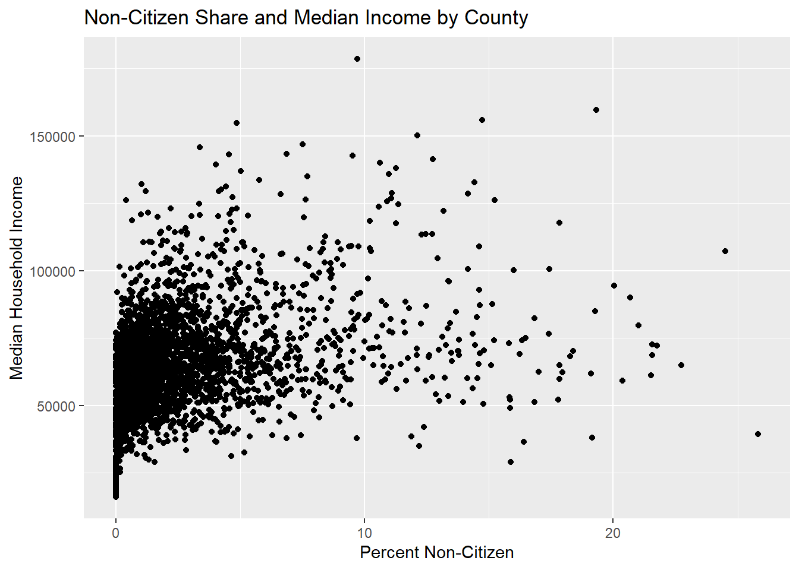
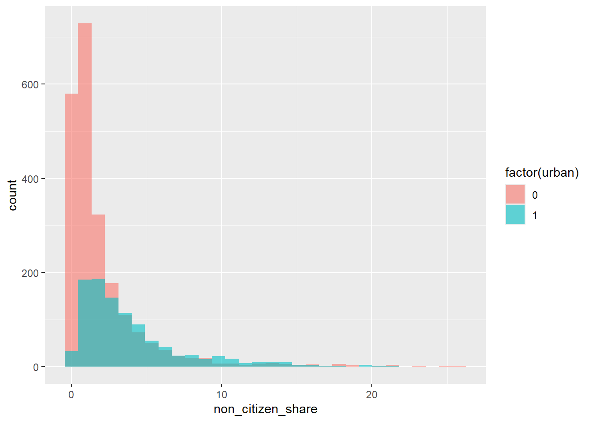
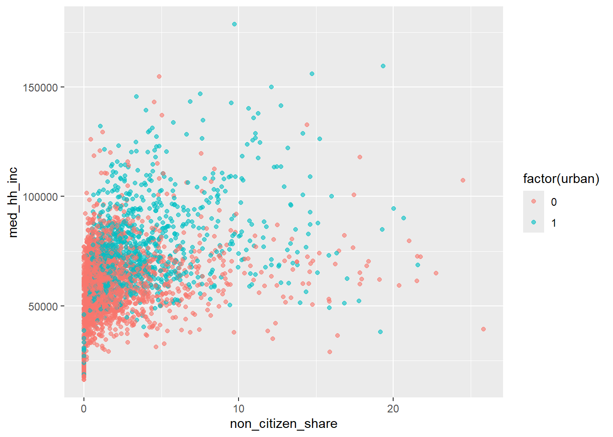
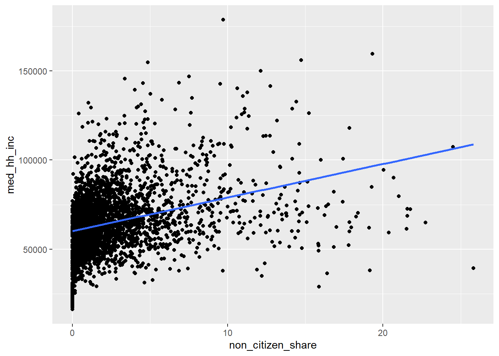

install.packages("ggplot2")Lecture 3: Plotting with ggplot
In this lecture, we introduce data visualization using the ggplot2 package. The goal is not to make fancy plots, but to learn how graphs help us see patterns, ask better questions, and check assumptions before running regressions.
We will use this county-level American Community Survey data focused on citizenship and economic outcomes. This allows us to visualize meaningful variation across places and connect plots directly to economic reasoning.
Why Plot Data?
Before estimating models, data analysts almost always look at graphs.
Plots help us:
Understand the distribution of variables
See relationships between variables
Identify outliers or unusual observations
Can help us spot errors
Decide what kinds of models might make sense
Think of plotting as descriptive analysis, not a decoration.
Load the Required Packages
We will use the ggplot2 package for plotting. First, if you have never used this package before, you need to install it with the following code:
Then, every time you open R, you need to run the code:
library(ggplot2)The Structure of a ggplot
Every ggplot2 graph follows the same basic structure:
ggplot(data = df, aes(x = x_variable, y = y_variable)) +
geom_something()Key components:
data: the data frameaes(): mappings from variables to visual elementsgeom_*(): how the data are displayed
You can read this as:
“Using this data, map these variables to the axes, and draw them this way.”
Load the Data
Load the data as demonstrated in lecture 2.
This dataset has the variables:
geoid- county identifier codename - county name
tot_pop- populationmed_hh_inc- median household incometotal_hh- total number of householdstotal_hh_w_assistance- total number of households receiving public assistancetotal_hh_no_assistance- total number of households not receiving public assistancecitizen_born- total population born a citizencitizen_naturalized- total population naturalized as a citizennon_citizen- total non-citizen population
Histogram: Distribution of Non-Citizens
Let’s start by getting the distribution of non-citizen shares across counties. First, we need to create a variable that shows the percent non-citizen rather than the total number.
county$non_citizen_share <- 100*county$non_citizen/county$tot_popThen, we can create our graph.
ggplot(county, aes(x = non_citizen_share)) +
geom_histogram()
This plot answers questions like:
Are most counties low or high in non-citizen population?
Is the distribution skewed?
At this stage, we are learning what is typical versus unusual.
Scatterplot: Non-Citizens and Income
Next, we examine the relationship between non-citizen share and median income.
ggplot(county, aes(x = non_citizen_share, y = med_hh_inc)) +
geom_point()
This plot helps us ask:
Do counties with more non-citizens tend to be richer or poorer?
Is the relationship roughly linear?
Are there extreme counties driving the pattern?
This kind of plot directly motivates regression analysis later in the course.
Adding Labels and Titles
Clear graphs require clear labels.
ggplot(county, aes(x = non_citizen_share, y = med_hh_inc)) +
geom_point() +
labs(
title = "Non-Citizen Share and Median Income by County",
x = "Percent Non-Citizen",
y = "Median Household Income"
)
Good labeling is part of good empirical practice.
Comparing Groups: Urban vs. Rural Counties
Let’s create a variable urban that equals 1 for counties with more than 100,000 people and 0 for counties with less than 100,000.
county$urban <- ifelse(county$tot_pop > 50000, 1, 0)Now, let’s compare distributions using color.
ggplot(county, aes(x = non_citizen_share, fill = factor(urban))) +
geom_histogram(position = "identity", alpha = 0.6)
This allows us to see:
Whether non-citizens are concentrated in urban areas
How distributions differ across groups
Scatterplot with Color by Group
We can also color points by group in a scatterplot.
ggplot(county, aes(x = non_citizen_share, y = med_hh_inc, color = factor(urban))) +
geom_point(alpha = 0.6) # Alpha sets the transparency of points
This helps separate within-group and between-group patterns.
Adding a Trend Line (Preview of Regression)
We can add a fitted line to summarize the relationship visually.
ggplot(county, aes(x = non_citizen_share, y = med_hh_inc)) +
geom_point() +
geom_smooth(method = "lm", se = FALSE)
This line is:
A simple linear summary of the relationship
A visual preview of what a regression does numerically
We will return to this idea when we formally introduce regression.
Interpreting Graphs Carefully
Important reminder:
Graphs show correlation, not causation
County-level patterns reflect many underlying factors
Plots are a starting point for analysis, not a final conclusion.
Common Plotting Mistakes
Plotting before understanding the variables
Forgetting to label axes
Interpreting slopes causally
Ignoring extreme outliers
Visualization should clarify, not confuse.
Exercise
Using the county-level dataset:
Create a variable for % of households with public assistance
Create a histogram of % receiving public assistance
Create a scatterplot of non-citizen share vs % with public assistance
Add appropriate axis labels and a title
Interpret each plot
Focus on what you learn from the graph, not how complex the code is.